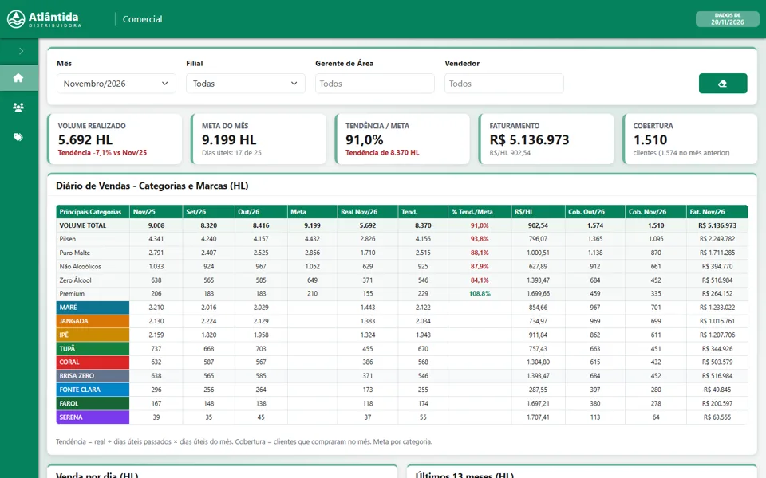

Comercial
Vendas do mês contra a meta, por categoria, produto e cliente.
- Diário de Vendas: tendência, meta, cobertura e histórico de 24 meses no gráfico
- Curva ABC de clientes com filtros em cascata
- Mapa Comercial: potencial e cobertura por município, sobre a malha e a população do IBGE